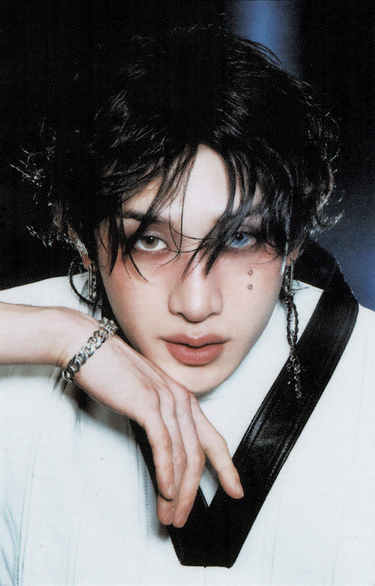
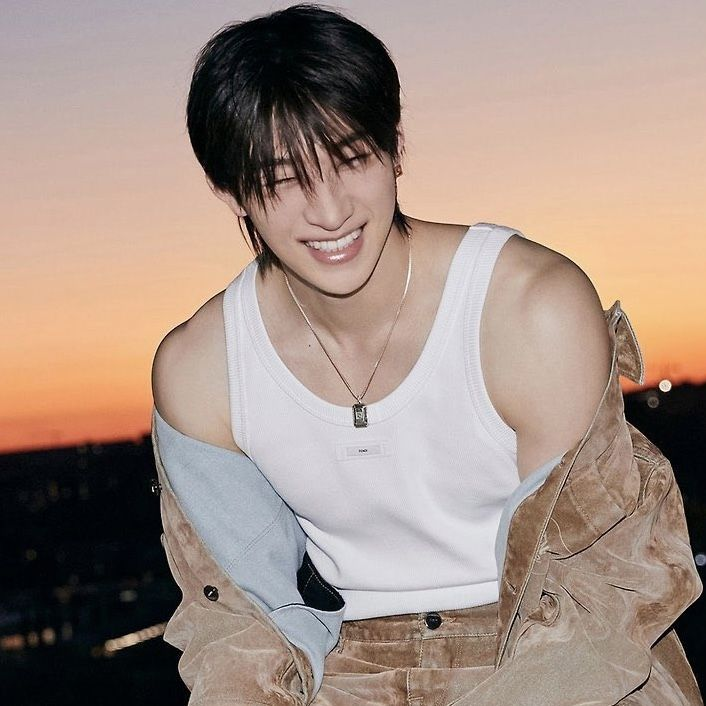
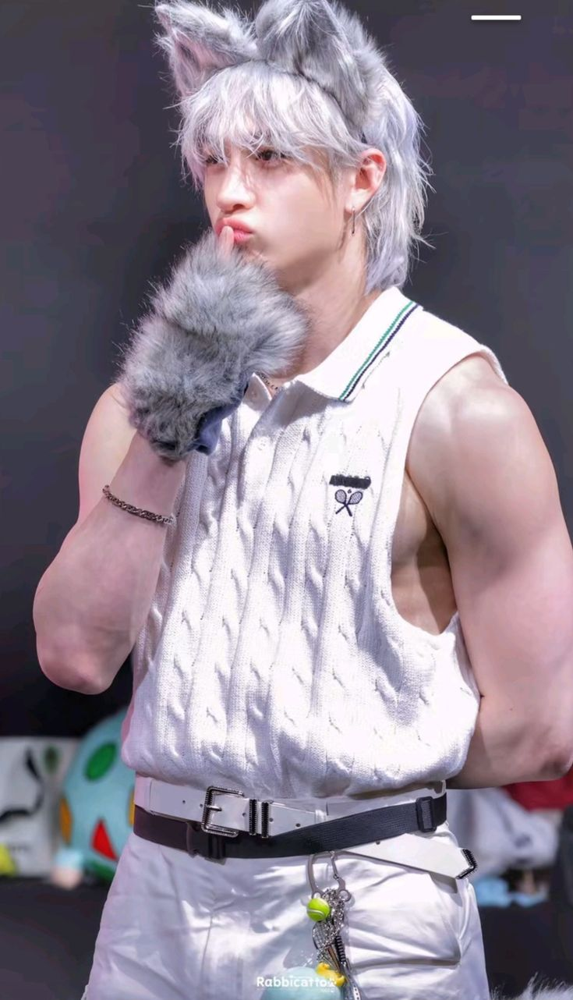

Bang cristopher
Perfil
Nombre: 방찬 / Bang Chan
Nombre japonés: バンチャン
Nombre inglés: Christopher Bahng
También conocido como: CB97
Anteriormente conocido como: 크리스 / Chris
Apodos: Channie, Chan
Profesión: Cantante, Rapero, Bailarín, Productor y Compositor
Fecha de nacimiento: 03-Octubre-1997 (28 Años)
Lugar de nacimiento: Seúl, Corea del Sur
Estatura: 171 cm
Peso: 56 kg
Tipo de sangre: O
Signo zodiacal: Libra
Signo zodiacal chino: Buey
Familia: Padres, hermana menor (Hannah Bahng) y hermano menor
Agencia: JYP Entertainment
Programas de TV
Stray Kids (Mnet, 2017)
Programa de Radio
(SBS) Choi Hwajeongs Power Time (12.04.2019) (Junto a Hyun Jin y Felix)
(SBS Radio) NCT Night Night (09.09.2018) (Junto a Woo Jin, Lee Know y Chang Bin)
(SBS) POWER FM Park Sohyun's LOVE GAME (03.11.2018) (Junto a Hyun Jin e I.N)
Anuncios
2011: Australian Beef
Colaboración de Videos musicales
TWICE - Like Ooh Ahh (2015)
•Miss A - Only You (2015)
Curiosidades
Estudios: Newtown High School of the Performing Arts Cheongdam High School.
Periodo de entrenamiento: 7 años.
Modelo a seguir: Drake, RM de BTS, Cristiano Ronaldo y su padre.
Hobbies: Hacer deportes.
Idiomas: Inglés (Lengua materna), Coreano (Fluido), Japonés (Intermedio), Chino (Básico) y Griego (Básico).
Vivió en New South Wales en 5 suburbios diferentes cuando vivía en Australia: Strathfield, Drummoyne, Enfield, Belmore, Greenacre.
Entró a JYP en el 2010 después de pasar una audición en Australia.
Fue un candidato para debutar en GOT7, pero eligieron a BamBam debido a que Chan tenía menos tiempo de entrenamiento en la compañía.
Hizo un cameo en el MV "Like Ooh Ah" de Twice como zombie y el MV "Only You" de Miss A.
Si no fuera cantante, hubiera querido ser atleta.
Cuando asistía a clases de música aprendió ballet y danza contemporánea.
Ha producido la mayoría de las canciones de 3RACHA y Stray Kids.
Tiene 113 canciones con derechos de autor a su nombre según Korea Music Copyright Association.
imágenes



